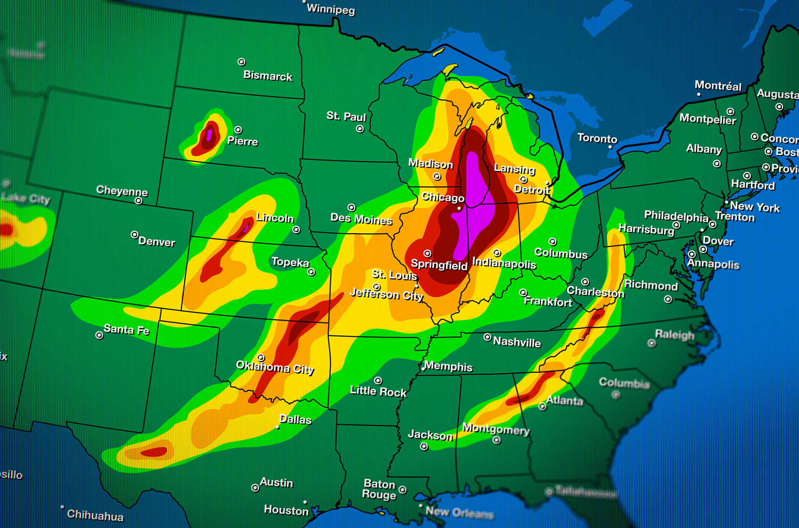

Information
Weather Models & The GFS
Weather models are essential tools in meteorology used to simulate and predict atmospheric conditions. They take in current observations from satellites, radar, and weather stations, then apply physical equations to forecast variables like temperature, wind, precipitation, and pressure. Meteorologists use these models to anticipate weather patterns, issue warnings, and guide decision-making for public safety, aviation, agriculture, and more. Different models offer varying strengths depending on the region, forecast range, and weather type.
The GFS is one of the main long-range forecast models in the United States, however, it has major issues when it comes to forecasting wintertime severe weather events.
The GFS model tends to have a cold bias, especially near the surface during nighttime and winter. It can also overestimate precipitation in convective situations and sometimes underrepresents uncertainty in its ensemble forecasts, leading to overconfident predictions. These biases vary by region and season but are continually addressed through model updates.
The Global Forecast System (GFS) is not trained like a machine learning model; instead, it is a numerical weather prediction (NWP) model that uses physics-based equations to simulate atmospheric processes. Its forecasts are initialized using the Global Data Assimilation System (GDAS), which integrates real-time observational data from satellites, weather stations, aircraft, buoys, and radar. This data is assimilated using advanced techniques to create a detailed snapshot of the current atmosphere, which the GFS then uses to simulate future conditions. The GFS operates on a global grid system, solving equations of fluid dynamics, thermodynamics, and radiative transfer to forecast variables like temperature, wind, and pressure. It runs four times daily and produces forecasts up to 16 days ahead.
Instruments like satellites, weather stations, aircraft, buoys, and radar can be inaccurate due to a variety of factors:
• Calibration errors: Sensors may drift over time or be improperly calibrated, leading to systematic measurement errors.
• Environmental interference: Clouds, precipitation, terrain, and electromagnetic noise can distort radar and satellite signals.
• Spatial and temporal gaps: Observations may be sparse in remote areas (like oceans or polar regions) or infrequent, reducing data quality.
• Instrument limitations: Each platform has physical constraints—e.g., satellites may struggle with vertical resolution, while surface stations only measure conditions at ground level.
• Human error: Manual observations or maintenance issues can introduce inaccuracies.
Positive Impacts
AI has benefited the weather enterpise and society greatly. Weather models can predict possible dangerous weather events like tornadoes, hurricanes, blizards, and floods days in advance, which allows residents of affected areas to prepare or evacuate from the area if necessary. It also allows businesses to prepare by alerting their employees of possible dangerous weather situations.
Negative Impacts
Weather models, although extremely helpful, have a downside. Weather models can have biases that make future weather events look weaker or stronger than what they become. For example, many times weather models predicted no or little tornadoes, which would cause the SPC (Storm Prediction Center) to issue laxed forecasts. This would give residents a false sense of security and leave them unprepared. In many situations like this, people died because they did not expect tornadoes to hit, when it turned out tornadoes did happen.